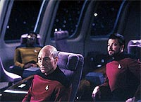
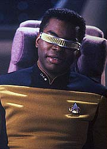
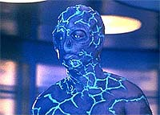
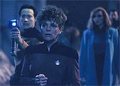

|
MANCHETE
DO EPISDIO
Aliengenas
fazem por Geordi o que os
Borgs fizeram pelo capito Picard
Episdio
anterior | Prximo
episdio
Sinopse:
Data Estelar: 44664.5.
Geordi La Forge contatado por Susanna Leitjen, uma ex-colega que
o acompanhou em um grupo avanado ao planeta Tarchannen III cinco
anos atrs. Segundo ela, o resto da equipe desapareceu,
aparentemente aps ter retornado ao planeta.
Aps Leitjen ficar doente, a dra. Crusher descobre que o DNA da
amiga do engenheiro-chefe est sendo rescrito por um parasita,
transformando-a em uma espcie diferente.
 Quando
Geordi estuda os dirios de sua antiga misso, ele encontra evidncias
de que havia uma entidade desconhecida perto do grupo avanado.
Logo depois, o engenheiro tambm fica doente, acometido pelo mesmo
mal que atingiu Leitjen. Fora de controle, ele se transporta para a
superfcie do planeta.
Crusher restaura Susanna ao remover o parasita --na verdade o mtodo
de reproduo daquela espcie. Logo depois, as duas vo ao
planeta, na tentativa de encontrar Geordi em tempo para cur-lo. Ao
encontr-lo, so capazes de apelar para o pouco que restou de sua
humanidade, pedindo para que ele retorne nave.
De volta Enterprise, a equipe mdica consegue restaurar sua
condio original. Os outros membros do antigo grupo avanado no
puderam ser recuperados.
Comentrios:
"Identity
Crisis" mais um episdio que traz seu foco para perto
do engenheiro-chefe da Enterprise, Geordi La Forge. Apesar de poder
ter sido mais trabalhado, acabamos tendo algum vislumbre sobre o
passado e, mais ainda, sobre a determinao do jovem oficial.
 A
idia foi casar bem o preceito dos produtores de que cada episdio
obrigatoriamente deveria falar sobre um dos personagens regulares
com a premissa original da histria. De certo modo, "Identity
Crisis" tenta fazer por La Forge o que "The Best of
Both Worlds" fez por Picard.
Infelizmente, os moldes da histria no permitem que a faanha
seja repetida nas mesmas porpores. Embora o processo que toma
conta de La Forge seja essencialmente o mesmo que envolve a assimilao
pelos Borgs (excluindo-se o fato de que enquanto um 100% biolgico,
o outro 100% ciberntico), a natureza pacfica da espcie
responsvel destri a possibilidade de criar para La Forge um
terror to grande quanto o de Picard.
Por outro lado, a idia totalmente compatvel com um dos ideais
de Jornada nas Estrelas --a tendncia a evitar esteretipos
e maniquesmos. Apesar do mal que os aliengenas causam a La Forge
e seus ex-colegas, fica muito claro que eles no esto fazendo
nada alm de lutar por sua prpria espcie.
 Levando
essa idia s ltimas conseqncias, descobrimos que se trata
de um grande conceito para uma histria de fico cientfica --
muito mais provvel que seres vivos nascidos em um ecossistema
aliengena tenham hbitos totalmente incompatveis com a sobrevivncia
de outras espcies provenientes de outros mundos do que o contrrio.
Ou seja, a coexistncia pacfica no somente uma questo de
opo -- muito mais uma questo ecolgica. Predadores no
podem coexistir pacificamente com suas presas. Ponto final.
A qualidade dessa histria reside justamente na capacidade de ter
assimilado essa premissa, ao mesmo tempo em que cria uma histria
interessante e traz novos insights sobre um dos personagens
regulares.
 Como
destaque adicional, vale mencionar o espetacular trabalho de
maquiagem e de efeitos especiais feito para este episdio. Tanto as
etapas da metamorfose quanto a verso final dos aliengenas so
simplesmente magnficas.
No fim das contas, trata-se de um bom episdio, que est para "The
Best of Both Worlds" assim como Geordi La Forge est para
Jean-Luc Picard.
Citaes:
Beverly - "You
are worried about Geordi, aren't you?"
("Voc est preocupado com o Geordi, no?")
Data - "I am an android. It is not possible for me... to
feel anxiety. Starfleet personnel have vanished. Others may be at
risk. We must do the best we can to find out why."
("Eu sou um andride. No possvel para mim... sentir
ansiedade. Pessoas da Frota Estelar sumiram. Outras podem estar em
perigo. Precisamos fazer o melhor que pudermos para descobrir por
que.")
Beverly - "Hmmm."
("Hmmm.")
Data - "However, I am... strongly motivated to solve this
mystery."
("Entretanto, estou... fortemente motivado a resolver esse mistrio.")
Trivia:
 Neste episdio, a enfermeira Alyssa, interpretada por Patti
Yasutake finalmente ganha um nome completo: Alyssa Ogawa. Essa
personagem ser vista em muitos episdios daqui para frente, at
o ltimo episdio da srie, "All Good Things...".
A enfermeira tambm faz uma participao no primeiro filme para
cinema da Nova Gerao, "Jornada nas Estrelas -
Generations".
Neste episdio, a enfermeira Alyssa, interpretada por Patti
Yasutake finalmente ganha um nome completo: Alyssa Ogawa. Essa
personagem ser vista em muitos episdios daqui para frente, at
o ltimo episdio da srie, "All Good Things...".
A enfermeira tambm faz uma participao no primeiro filme para
cinema da Nova Gerao, "Jornada nas Estrelas -
Generations".
E
falando no episdio final da srie, "All Good Things...",
este episdio tem o mesmo diretor de "Identity Crisis":
Winrich Kolbe. Kolbe dirigiu muitos episdios das sries atuais de
Jornada, tendo estreado em "Where
Silence Has Lease", episdio da 2 temporada da Nova
Gerao. Ele o terceiro diretor em nmero de episdios da
Nova Gerao, com 16. Na frente dele esto Les Landau, com
21, e Cliff Bole, como lder absoluto, com 26 episdios dirigidos.
O ator da srie que mais dirigiu episdios da Nova Gerao foi
Jonathan Frakes (Riker), com 8, seguido por Patrick Stewart (Picard),
com 5, LeVar Burton (La Forge), com 2, e Gates McFadden (dra.
Crusher), com 1.
Aps
fazer sua estria como figurante na diviso de cincias da
Enterprise-D em "Where No One Has Gone
Before" e morrer fazendo uma ponta como um oficial da
segurana de nome Ramos em "Heart of
Glory", o coordenador de dubls da srie Dennis
Madalone interpreta neste episdio o chefe de transporte Hedrick.
A
histria original deste episdio, de autoria do "f-escritor"
Timothy de Haas seria sobre dois membros desconhecidos da tripulao,
e no sobre La Forge. Aps o roteiro para o episdio ser escrito,
ficou definido que a histria seria sobre La Forge e que ele e
Susanna seriam um par romntico. Mas, segundo o roteirista Brannon
Braga, os produtores pediram para que as tediosas histrias de amor
de La Forge ("Booby Trap", "Galaxy's
Child") dessem um tempo.
Ficha
tcnica:
Histria de Timothy de Haas
Roteiro de Brannon Braga
Direo de Winrich Kolbe
Exibido em 25/03/1991
Produo: 092
Elenco:
Patrick Stewart como
Jean-Luc Picard
Jonathan Frakes como William Thomas Riker
Brent Spiner como Data
LeVar Burton como Geordi La Forge
Michael Dorn como Worf
Gates McFadden como Beverly Crusher
Marina Sirtis como Deanna Troi
Elenco convidado:
Maryann Plunkett
como tenente-comandante Susanna Leitjen
Patti Yasutake como enfermeira Alyssa Ogawa
Amick Byram como tenente Hickman
Dennis Madalone como chefe de transporte Hedrick
Mona Grudt como alferes Graham
Episdio
anterior | Prximo
episdio
|